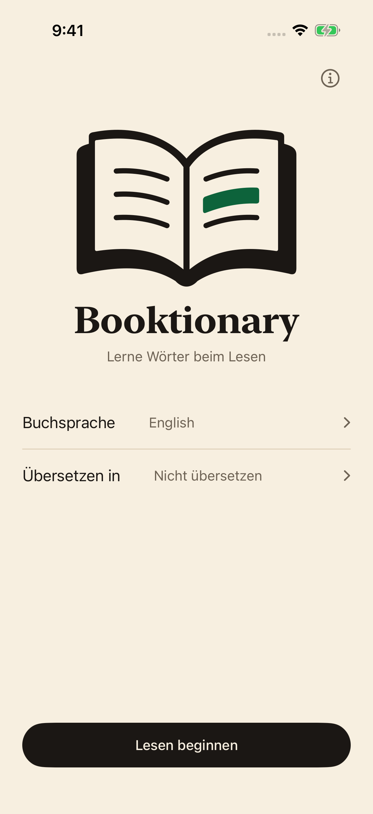
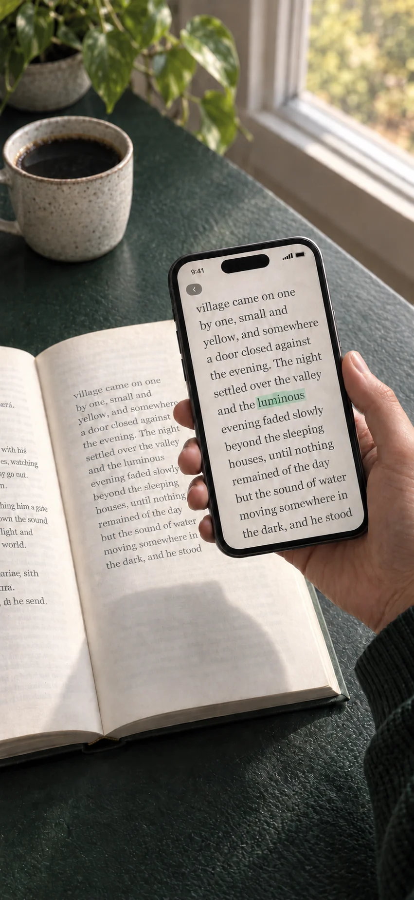
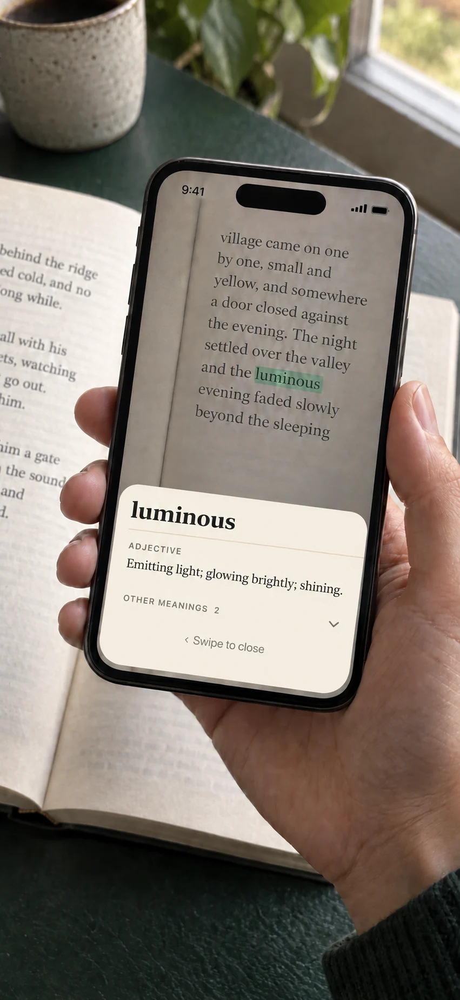
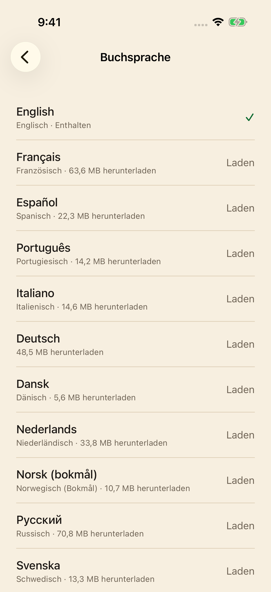

01
Buch und App öffnen.
Wähle die Sprache deines Buches und tippe auf Lesen starten.
Ein kleiner Begleiter für gedruckte Bücher
Ein unbekanntes Wort sollte dich nicht aus einem guten Buch reißen. Richte dein iPhone auf die Seite, finde die Bedeutung und lies weiter.
$1.99 USDEinmaliger Kauf. Kein Abo.

Weniger suchen. Mehr lesen.Ein Moment der Neugier
Kein Tippen, kein App-Wechsel. Ein kurzer Blick und zurück zum Buch.

Wähle die Sprache deines Buches und tippe auf Lesen starten.
Halte den kleinen grünen Kreis etwa eine Sekunde über das Wort. Die Markierung bestätigt die Erkennung.

Lies die Definition und wische sie weg. Die Kamera ist sofort für das nächste Wort bereit.
Wähle die Sprache deines Buches
Englische Definitionen sind integriert. Wähle aus 23 weiteren Wörterbüchern und lade nur die benötigten herunter.
Du liest ein englisches Buch? Wähle aus 24 separaten Wortübersetzungspaketen: den 23 herunterladbaren Buchsprachen oben sowie Griechisch.
Griechisch bietet eine Oberfläche und Übersetzungen englischer Wörter, aber keine griechische Buchsprache. Kurdisch umfasst Kurmanji in lateinischer Schrift, nicht Sorani; Malaiisch umfasst Rumi in lateinischer Schrift. Chinesisch unterstützt vereinfachte und traditionelle Schrift. Die Abdeckung hängt von Wort, Form und Sprache ab.
27 lokalisierte Oberflächen, darunter kanadisches Französisch sowie vereinfachtes und traditionelles Chinesisch.
Alle Wörterbücher und verfügbaren Übersetzungspakete sind im Kauf enthalten. Installierte Pakete funktionieren offline.

Das Wesentliche
Installierte Wörterbücher und Übersetzungen funktionieren ohne Internet.
Kamerabilder und erkannte Wörter bleiben auf deinem iPhone. Ohne Konto, Werbung, Analysen oder Tracking.
Alle verfügbaren Wörterbücher und Übersetzungspakete sind enthalten. Kein Abo, keine In-App-Käufe.
Ja. Das englische Wörterbuch ist integriert. Lade zusätzliche Wörterbücher und Übersetzungen online herunter; danach funktionieren sie ohne Verbindung. Für den Paketkatalog ist Internet nötig.
Die 24 Buchsprachen sind oben aufgeführt. Englisch ist integriert; die anderen 23 Wörterbücher werden einzeln geladen. Wähle vor dem Lesen die Buchsprache. Chinesisch unterstützt beide Schriften; Kurdisch umfasst lateinisches Kurmanji und Malaiisch Rumi.
Für englische Bücher wählst du ein separates Übersetzungspaket in eine der 23 herunterladbaren Wörterbuchsprachen oder Griechisch. Das sind Wortentsprechungen, keine ganzen Seiten. Die Abdeckung variiert. Ein Wörterbuchdownload installiert keine Übersetzungen; andere Buchsprachen zeigen native Definitionen.
Booktionary benötigt ein iPhone mit iOS 17 oder neuer. Gutes Licht hilft bei der Texterkennung.
Nein. Bilder, erkannte Wörter und Nachschlagen bleiben auf dem Gerät. Ohne Konto, Werbung oder Analysen. Für Downloads wird der Server kontaktiert, der deine IP-Adresse erhalten kann.
Gute Beleuchtung hilft. Halte das Telefon näher an die Seite, wenn der Text nicht erkannt wird, und wähle zuerst die Buchsprache. Prüfe die Offline-Nutzung, indem du die Ressourcen installierst und im Flugmodus ein Wort nachschlägst.
Brauchst du Hilfe? Schreibe an fredddv@hotmail.com und nenne dein iPhone-Modell, die iOS-Version, die Buchsprache und das Problem.
Für die Liebe zu gedruckten Büchern
$1.99 USDEinmaliger Kauf. Kein Abo.
Für iPhone · iOS 17 oder neuer